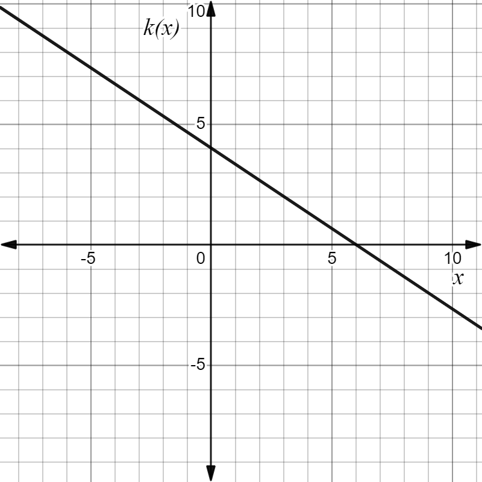
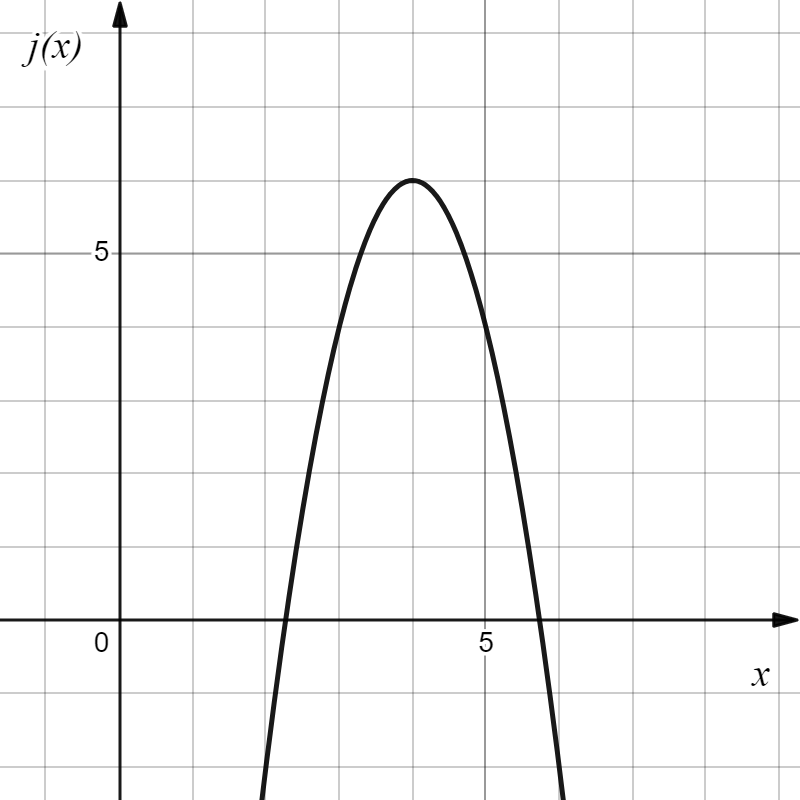

Skip to main content
Contents Dark Mode Prev Up Next \(
\newcommand{\lt}{<}
\newcommand{\gt}{>}
\newcommand{\amp}{&}
\definecolor{fillinmathshade}{gray}{0.9}
\newcommand{\fillinmath}[1]{\mathchoice{\colorbox{fillinmathshade}{$\displaystyle \phantom{\,#1\,}$}}{\colorbox{fillinmathshade}{$\textstyle \phantom{\,#1\,}$}}{\colorbox{fillinmathshade}{$\scriptstyle \phantom{\,#1\,}$}}{\colorbox{fillinmathshade}{$\scriptscriptstyle\phantom{\,#1\,}$}}}
\)
Section 0.1 Review of Linear and Quadratic Functions
In MAT 103, you learned how to solve linear and quadratic equations and how to use these to model real world situations.The graph of a linear function is a line, and its equation is often written in slope-intercept form
\begin{equation*}
y=mx+b
\end{equation*}
where \(m\) is the slope of the line and \(b\) is the vertical intercept (the point where the line crosses the vertical axis) or point-slope form
\begin{equation*}
y-y_1=m(x-x_1)
\end{equation*}
where \(m\) is the slope of the line and \((x_1,y_1)\) is any point on the line.Slope is a measure of the steepness of a line. For a linear function \(f(x)\text{,}\) the slope of a line can be calculated as the ratio
\begin{equation*}
\text{slope}=\frac{\text{change in output}}{\text{change in input}}=\frac{f(x_2)-f(x_1)}{x_2-x_1}
\end{equation*}
Problem 0.1.1 .
Let
\(k\) be as shown in the graph below.

Figure 0.1.2. Graph of \(k(x)\text{.}\)
Write a function equation for
\(k\text{.}\)
Use your equation to evaluate
\(k(-3)\text{.}\) Verify this point on the graph.
Use your equation to solve
\(k(x)=-2\text{.}\) Verify this point on the graph.
Use your equation to solve
\(k(x) \geq -2\text{.}\) Write your answer in interval notation and verify your solution on the graph.
Problem 0.1.3 .
Let
\(g\) be as shown in the table below.
Table 0.1.4.
\(g(x)\) \(-9\) \(-6\) \(-3\) \(0\) \(3\)
Write a function equation for
\(g\text{.}\)
Use your equation to evaluate
\(g(-5)\text{.}\)
Use your equation to solve
\(g(x)=14\text{.}\)
Use your equation to solve
\(g(x) < 5\text{.}\) Write your answer in interval notation.
Problem 0.1.5 .
You are in charge of ordering pizza for your soccer team’s banquet. A local pizza shop has two options for ordering multiple pizzas:
Option 1: $22 for the first pizza and $12 for each additional pizza
Make a table for the cost,
\(c_1\text{,}\) of
\(p\) pizzas using option 1.
Write a function equation
\(c_1(p)\) for the cost,
\(c\text{,}\) of
\(p\) pizzas using option 1.
Make a table for the cost,
\(c_2\text{,}\) of
\(p\) pizzas using option 2.
Write a function equation
\(c_2(p)\) for the cost,
\(c\text{,}\) of
\(p\) pizzas using option 2.
For what number of pizzas is the cost for option 1 the same as the cost for option 2? How much does this number of pizzas cost?
If you have a budget of $150 for the event, how many pizzas can you buy? Use whichever option will give you the lowest price.
Problem 0.1.6 .
Solve each equation or inequality below algebraically. Then solve by graphing in Desmos to check your answer.
\(\displaystyle 5x-2=14\)
\(\displaystyle x+11=-2x+9\)
\(\displaystyle -3(x-11)=4x-9\)
\(\displaystyle -7x+12 \geq 5\)
\(\displaystyle x-2 < - 3x + 15\)
A quadratic function is a polynnomial function with degree 2 (the largest exponent of the variable is 2). Quadratic functions can be written in the form
\begin{equation*}
f(x)=ax^2+bx+c
\end{equation*}
where \(a \neq 0\text{.}\)
The shape of the graph of a quadratic function is a parabola . A quadratic function can also be written in vertex form as
\begin{equation*}
f(x)=a(x-h)^2+k
\end{equation*}
where \(a \neq 0\) and \(h\) and \(k\) are real numbers and \(x\) is a variable.
The minimum or maximum value of a quadratic function is at the
vertex of its associated parabola.
Problem 0.1.7 .
Use the graph of
\(j(x)\) below to answer the following questions.

Figure 0.1.8. Graph of \(j(x)\text{.}\)
What are the coordinates of the vertex of the graph of
\(j\text{?}\)
Write an equation for
\(j(x)\text{.}\)
Solve
\(j(x) \geq 4\text{.}\)
Find the
\(x-\) intercepts of
\(j\text{.}\)
Find the vertical intercept of
\(j\text{.}\)
What are the domain and range of
\(j\text{?}\)
Problem 0.1.9 .
Solve each equation below algebraically. Then solve by graphing in Desmos to check your answer.
\(\displaystyle k^2+11k+24=0\)
\(\displaystyle 5p^2=210\)
\(\displaystyle r^2=-5+6r\)
\(\displaystyle v^2-9=4v\)
\(\displaystyle x^3+8x^2+16x=0\)
\(\displaystyle x^4-2x^2+1=0\)